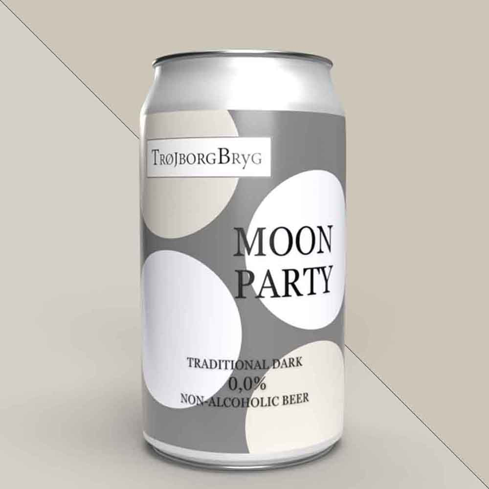
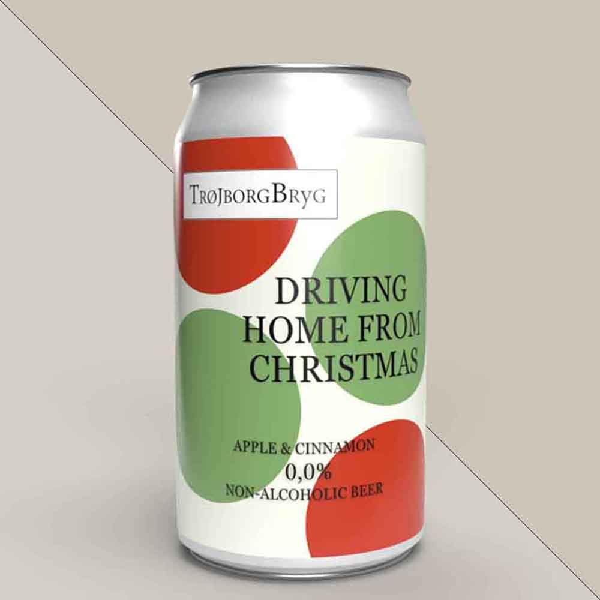

| Næringsindhold | Pr. 100 ml |
|---|---|
| Energi | 216 kJ / 52 kcal |
| Fedt | 0 g |
| Kulhydrat | 4 g |
| Heraf sukkerarter | 0,1 g |
| Protein | 0,5 g |
ALKOHOLFRI ØL
LIGHT THE NIGHT
En let og forfriskende alkoholfri øl. Det er vores bud på en traditionel
lys øl og giver dig samme smagsoplevelse som en helt almindelig pilsner.
Ingredienser: vand, bygmalt, humle, gær, naturlige aromaer.
Egner sig godt til tapas, pasta og lette retter.
Indhold: 33 CL
Pris: 38 kr.
MOON PARTY

En smagfuld oplevelse med vores mørke alkoholfrie øl. Du får en ristet og brændt
smag der giver en bitterhed, hvor den er toppet med lidt vanilje for at give den sødme.
Ingredienser: vand, ristet malt, humle, gær, naturlige aromaer, vaniljekrydderi.
Egner sig godt til en god bøf, eller til en julefrokost.
Indhold: 33 CL
Pris: 38 kr.
| Næringsindhold | Pr. 100 ml |
|---|---|
| Energi | 224 kJ / 52 kcal |
| Fedt | 0,3 g |
| Kulhydrat | 4 g |
| Heraf sukkerarter | 0,2 g |
| Protein | 0,3 g |
THE BOOSTER
En frisk og syrlig alkoholfri øl. Den er utrolig forfriskende og let, med den krydrede
smag af ingefær og den friske og syrlige smag af lime.
Ingredienser: vand, malt, humle, gær, frisk ingefærrod, limejuice, søde aroma.
Egner sig godt til asiatiske retter og grillet kød.
Indhold: 33 CL
Pris: 38 kr.
| Næringsindhold | Pr. 100 ml |
|---|---|
| Energi | 190 kJ / 45 kcal |
| Fedt | 0 g |
| Kulhydrat | 3 g |
| Heraf sukkerarter | 0,5 g |
| Protein | 0,6 g |
VACATION

En frisk og livlig alkoholfri øl, med smag af citron og grapefrugt. Den er perfekt til at slukke
tørsten, især i varmt vejr. Derfor er den oplagt til sommerens arrangementer.
Ingredienser: vand, bygmalt, humle, gær, citronsaft fra koncentrat, grapefrugtsaft fra koncentrat.
Egner sig godt til pizza eller grillmad på en sommerdag.
Indhold: 33 CL
Pris: 38 kr.
| Næringsindhold | Pr. 100 ml |
|---|---|
| Energi | 208 kJ / 50 kcal |
| Fedt | 0 g |
| Kulhydrat | 4 g |
| Heraf sukkerarter | 0,3 g |
| Protein | 0,5 g |
FLOWER POWER
En alkoholfri øl med duft af blomster. Smagen af hyldeblomst giver en perfekt kombination
af sødme og syrlighed til din alkoholfrie øl.
Ingredienser: vand, bygmalt, humle, gær, hyldeblomstekstrakt, tørrede hyldeblomster, citronsaft.
Egner sig godt til fisk, skaldyr og salater.
Indhold: 33 CL
Pris: 38 kr.
| Næringsindhold | Pr. 100 ml |
|---|---|
| Energi | 214 kJ / 51 kcal |
| Fedt | 0 g |
| Kulhydrat | 4 g |
| Heraf sukkerarter | 0,1 g |
| Protein | 0,5 g |
WILD BERRIES
En frugtig og forfriskende alkoholfri øl. Vi har lavet et mix af alkoholfri øl
og saft fra friske bær, som sammen skaber en syrlig, frisk og sød alkoholfri øl med eftersmag af bær.
Ingredienser: vand, bygmalt, humle, gær, sukker, friske hindbær, friske brombær.
Egner sig godt til oste, salater og grillet kød.
Indhold: 33 CL
Pris: 38 kr.
| Næringsindhold | Pr. 100 ml |
|---|---|
| Energi | 226 kJ / 54 kcal |
| Fedt | 0 g |
| Kulhydrat | 6 g |
| Heraf sukkerarter | 2 g |
| Protein | 0,5 g |
DRIVING HOME FROM CHRISTMAS

Den seneste tilføjelse til vores alkoholfrie udvalg. Med smag af sød æble og varm kanel,
kan du ikke undgå at komme i julestemning med denne alkoholfrie øl.
Ingredienser: vand, bygmalt, humle, gær, æblesaft fra koncentrat, kanelstænger.
Egner sig godt til oste, desserter og selvfølgelig julefrokosten.
Indhold: 33 CL
Pris: 38 kr.
| Næringsindhold | Pr. 100 ml |
|---|---|
| Energi | 230 kJ / 55 kcal |
| Fedt | 0 g |
| Kulhydrat | 5 g |
| Heraf sukkerarter | 0,3 g |
| Protein | 0,5 g |